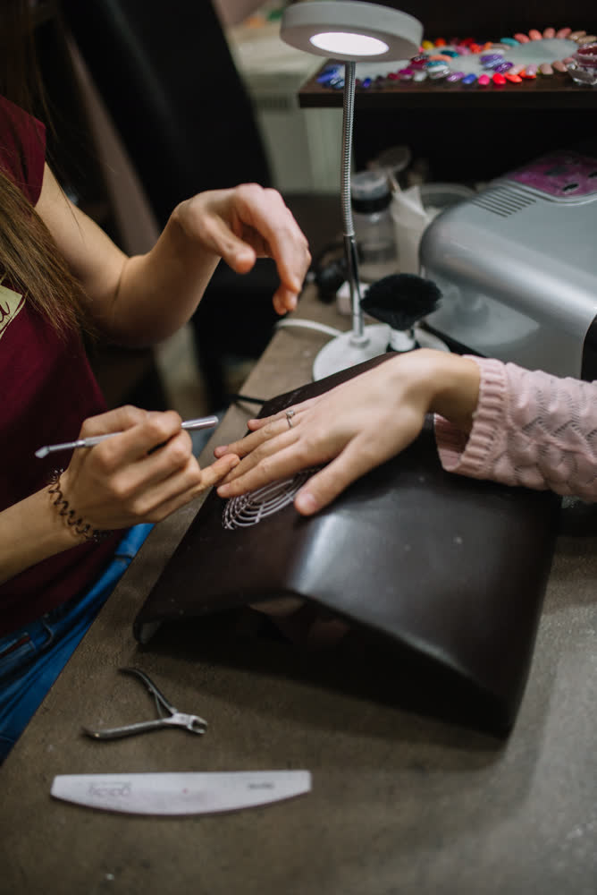
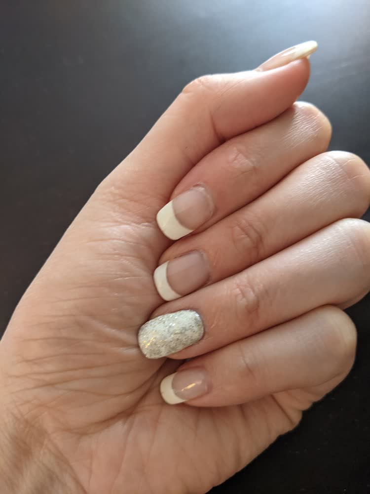

Ваш референс
Пришлите мастеру понравившийся оттенок или дизайн — мы адаптируем его под длину, форму и ваш привычный ритм.
Обсудить дизайнПодборка реальных фотографий маникюра: процесс, кристаллы и французский дизайн.


Пришлите мастеру понравившийся оттенок или дизайн — мы адаптируем его под длину, форму и ваш привычный ритм.
Обсудить дизайн